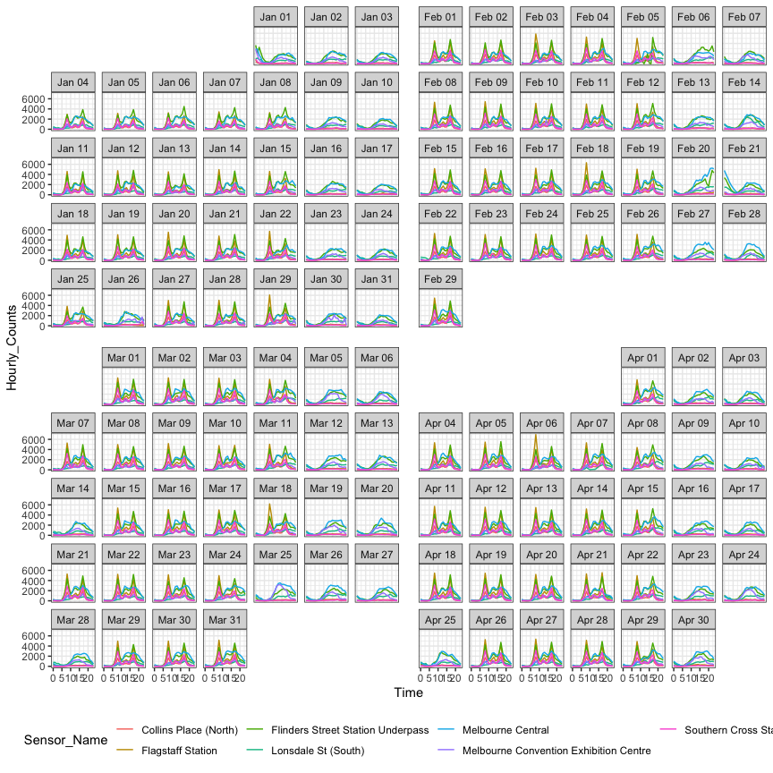
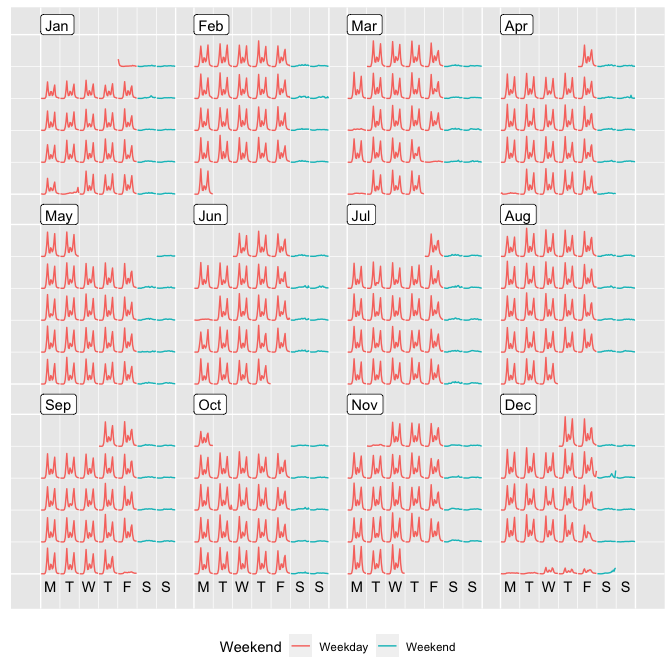

The goal of sugrrants is to provide supporting graphs with R for analysing time series data. It aims to fit into the tidyverse and grammar of graphics framework for handling temporal data.
Installation
You could install the stable version on CRAN:
You could also install the development version from Github using:
# install.packages("remotes")
remotes::install_github("earowang/sugrrants")
Usage
Calendar-based graphics
The fully-fledged faceting calendar facet_calendar() unlocks day-to-day stories.
library(dplyr)
library(sugrrants)
hourly_peds %>%
filter(Date < as.Date("2016-05-01")) %>%
ggplot(aes(x = Time, y = Hourly_Counts, colour = Sensor_Name)) +
geom_line() +
facet_calendar(~ Date) + # a variable contains dates
theme_bw() +
theme(legend.position = "bottom")

On the other hand, the frame_calendar() provides tools for re-structuring the data into a compact calendar layout, without using the faceting method. It is fast and light-weight, although it does not preserve the values.
p <- hourly_peds %>%
filter(Sensor_ID == 9, Year == 2016) %>%
mutate(Weekend = if_else(Day %in% c("Saturday", "Sunday"), "Weekend", "Weekday")) %>%
frame_calendar(x = Time, y = Hourly_Counts, date = Date) %>%
ggplot(aes(x = .Time, y = .Hourly_Counts, group = Date, colour = Weekend)) +
geom_line() +
theme(legend.position = "bottom")
prettify(p)

Google Summer of Code 2017
This package is part of the project—[Tidy data structures and visual
methods to support exploration of big temporal-context
data](https://summerofcode.withgoogle.com/projects/#4790455121215488),
which has been participated in Google Summer of Code 2017 (gsoc), for [R
project for statistical computing](https://www.r-project.org).
A new function `frame_calendar()`
\[[here](https://github.com/earowang/sugrrants/blob/master/R/frame-calendar.R)
and
[here](https://github.com/earowang/sugrrants/blob/master/R/calendar-fun.R)\]
in the **sugrrants** package has been developed and documented for
calendar-based graphics. I have also written a vignette
\[[source](https://github.com/earowang/sugrrants/blob/master/vignettes/frame-calendar.Rmd)
and [reader
view](http://pkg.earo.me/sugrrants/articles/frame-calendar.html)\],
which introduces and demonstrates the usage of the `frame_calendar()`
function. [Many unit
tests](https://github.com/earowang/sugrrants/blob/master/tests/testthat/test-calendar.R)
have been carried out to ensure the expected performance of this
function. The function implements non-standard evaluation and highlights
the [tidy evaluation](https://rlang.r-lib.org) in action. The initial
release (v0.1.0) of the package has been published on
[CRAN](https://CRAN.R-project.org/package=sugrrants) during the gsoc
summer time.
I have initialised a new R package
[**tsibble**](https://github.com/earowang/tsibble) for tidy temporal
data, as part of the project. The `tsibble()` function constructs a new
`tbl_ts` class for temporal data, and the `as_tsibble()` helps to
convert a few `ts` objects into the `tbl_ts` class. Some key verbs
(generics) from the **dplyr** package, such as `mutate()`,
`summarise()`, `filter()`, have been defined and developed for the
`tbl_ts` data class. The **tsibble** package was highly experimental
over the period of the gsoc
\[[commits](https://github.com/earowang/tsibble/commit/aba1cfc2eec88966c43232fe5d249522f88e1e27)\],
and these functions are very likely to be changed or improved in the
future.
A new package [**rwalkr**](https://github.com/earowang/rwalkr) has been
created and released on
[CRAN](https://cran.r-project.org/package=rwalkr) during the gsoc
summer. This package provides API to Melbourne pedestrian sensor data
and arrange the data in tidy temporal data form. Two functions including
[`walk_melb()`](https://github.com/earowang/rwalkr/blob/master/R/scrape.R)
and
[`shine_melb()`](https://github.com/earowang/rwalkr/blob/master/R/shiny.R),
have been written and documented as the v0.1.0 and v0.2.0 releases on
CRAN. The majority of the code for the function
[`run_melb()`](https://github.com/earowang/rwalkr/blob/master/R/soda.R)
has been done, but the interface needs improving after the gsoc.
Miscellaneous
The acronym of sugrrants is SUpporting GRaphs with R for ANalysing Time Series, pronounced as “sugar ants” that are a species of ant endemic to Australia.
Please note that this project is released with a Contributor Code of Conduct. By participating in this project you agree to abide by its terms.